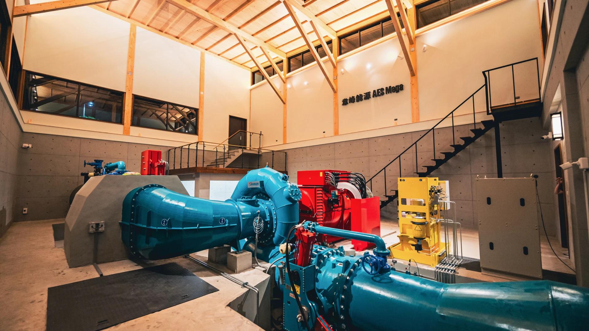

Projects
Selected engineering projects covering professional electromechanical system integration, renewable energy infrastructure, control optimization, PCB hardware design, and engineering research.
Work Projects
Hydropower · Electromechanical Integration
Hu-Shan 1.5 MW Hydropower Plant
AES Mega Co., Ltd.
Supported electromechanical integration, 3D system modeling, automation optimization, and commissioning activities for a small hydropower plant project. The project converted existing water infrastructure into a renewable energy generation asset.
Built and reviewed electromechanical layout models to support system arrangement, equipment positioning, piping interfaces, and project-level coordination.



Hydropower · Control Systems
Li-Cha 130 kW Hydropower Control Optimization
AES Mega Co., Ltd.
Optimized flow-control logic and control software for a 130 kW hydropower plant to improve operational stability, reduce manual intervention, and support more reliable plant operation.
Geothermal Power · System Layout
Liu-Huang-Zi-Ping 4.2 MW Geothermal Plant
AES Mega Co., Ltd.
Supported electromechanical system layout design and material planning for a geothermal power plant project, including system arrangement, equipment coordination, and bill-of-materials preparation.
Research / School Team Projects
Student Engineering Team
McGill Rocket Team — OCS2
McGill Rocket Team
Designed a reusable CAN FD transceiver PCB block for the rocket avionics system, focusing on schematic design, component selection, footprint verification, PCB layout, and hardware integration readiness.
Research · Energy Efficiency
Desiccant Wheel Efficiency Optimization
NTNU Research Project
Conducted research on desiccant wheel efficiency optimization by adjusting regeneration, process, and purge sector proportions. The project received the Excellent Award in an NTNU interdepartmental research competition.